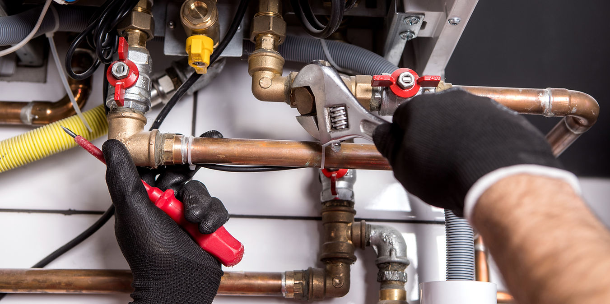
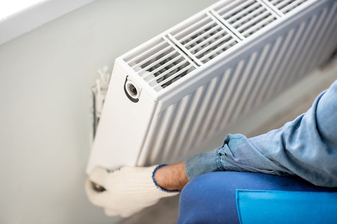
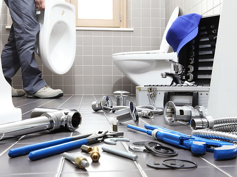

Chauffage
Installation de votre système de chauffage, entretien et dépannage de tous vos appareils.

Plus de 20 ans d’expérience pour votre chauffage, vos sanitaires et votre plomberie. Intervention rapide, travail soigné, devis clair. Agréé Solucalc pour les adoucisseurs d’eau.
Avec plus de 20 ans d’expérience en tant que plombier, je prends en charge aussi bien votre système de chauffage que vos installations sanitaires, y compris la récupération d’eau de pluie (citerne à eau, etc.).
Je suis joignable du lundi au samedi de 8 h à 17 h et je réalise également des dépannages urgents. Appelez-moi pour me faire part de votre situation : nous trouverons ensemble la solution qui vous convient le mieux.
Demander un devis
Un seul interlocuteur pour installer, réparer et entretenir vos équipements, de l’étude de votre besoin jusqu’à la mise en service.
Installation de votre système de chauffage, entretien et dépannage de tous vos appareils.
Pose de vos sanitaires : lavabo, douche, WC, robinetterie, salle de bain.
Réparation de canalisations et dépannage rapide de vos installations.
Citerne d’eau de pluie et placement d’adoucisseurs d’eau, installateur agréé Solucalc.

Je réalise chaque chantier avec professionnalisme et disponibilité, et je garantis une intervention rapide dans la mesure du possible.
Basé à Esneux, je me déplace dans toute la région pour vos travaux de chauffage, de plomberie et de sanitaires.
Oui, je réalise des dépannages urgents du lundi au samedi de 8 h à 17 h. Appelez-moi au 0497 42 98 94.
Esneux, Comblain-au-Pont, Sprimont, Aywaille, Nandrin, Neupré et Plainevaux.
Oui, je suis agréé Solucalc pour le placement des adoucisseurs d’eau.
Oui, j’interviens également pour la récupération d’eau de pluie (citerne à eau, etc.).
Installation ou réparation en plomberie, chauffage et sanitaires aux alentours d’Esneux : décrivez votre besoin, je reviens vers vous rapidement.
Adresse
Devant Rosière 3a, 4130 Esneux
Téléphone
0497 42 98 94